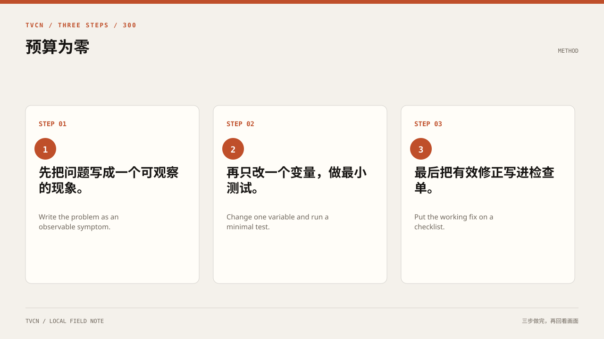

没钱时先换“规模”，不换“标准”
零预算能拍的是小空间、少角色、自然光、短时长。把剧本压到一个房间、两个人、一个下午；不要用“低成本”当借口保留五个场景。
把钱花在观众最能感到的地方：声音、演员、一个关键道具。别平均撒在器材上。
边界
低成本不等于粗糙。画面可以简单，声音不能听不清，故事不能没有变化；这三样是底线，不是预算项。
零预算项目，先定“不能做什么”
零预算不是“免费拍片”，是用现有资源换一个可展示的结果。开始前先写三条边界：不租器材、不请演员、不出外景；或只保留一条。边界越清楚，项目越可能完成。
| 资源 | 能换什么 | 代价 |
|---|---|---|
| 你的技能 | 为对方拍一条 30 秒片 | 时间，不是现金 |
| 对方的场地/产品 | 免费拍摄场景与道具 | 要给对方可用成片 |
| 平台/社群 | 曝光、互推、反馈 | 不一定带来客户 |
零预算的正确目标
不是“做一个大片”，是“完成一次完整流程”。把范围压到 1 个场景、1 个机位、1 个成片、1 轮修改。用手机或现有相机，不追求参数；把时间花在脚本、现场声和剪辑节奏上。
三种不要接的零预算
- 要求“先看效果再谈钱”的商业品牌；这是比稿，不是合作。
- 需要垫付场地、器材、演员的项目；零预算不等于零成本。
- 版权归客户、还要你承担无限修改的项目；没有预算，更要把范围写死。
若决定做，签一页备忘录：双方各自出什么、成片用在哪、署名怎么写、什么时候结束。零预算项目也要有交付日，否则它会无限延长。
DIAGRAM / Method card
三步流程

现场
砍场面：人群、夜景、车辆；用一间房、两个人、一个道具重写。
怎么做
零预算先砍场面，不砍结构；一个能拍完的简单故事，比拍不起的好故事强。
- 把剧本的场景数压到一到两个，人物压到一到两个。
- 用自然光、现有房间、手机或借来的机器拍。
- 把省下的钱放在声音和一顿饭上，保证能拍完。
别踩
别用“等有钱再拍”当借口；先拍一个能交的版本。
图片说明：本页封面、图解与步骤图是编辑示意或结构图，不是本页实测照片，也不能当作器材测试证据；AI 辅助生成的图会在图注标出。判断器材或画面，以正文的测试条件与现场记录为准。